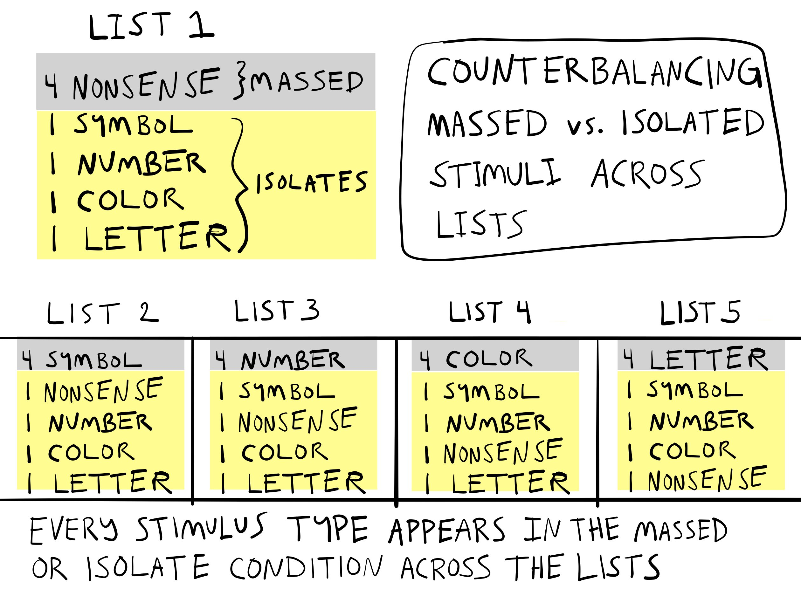
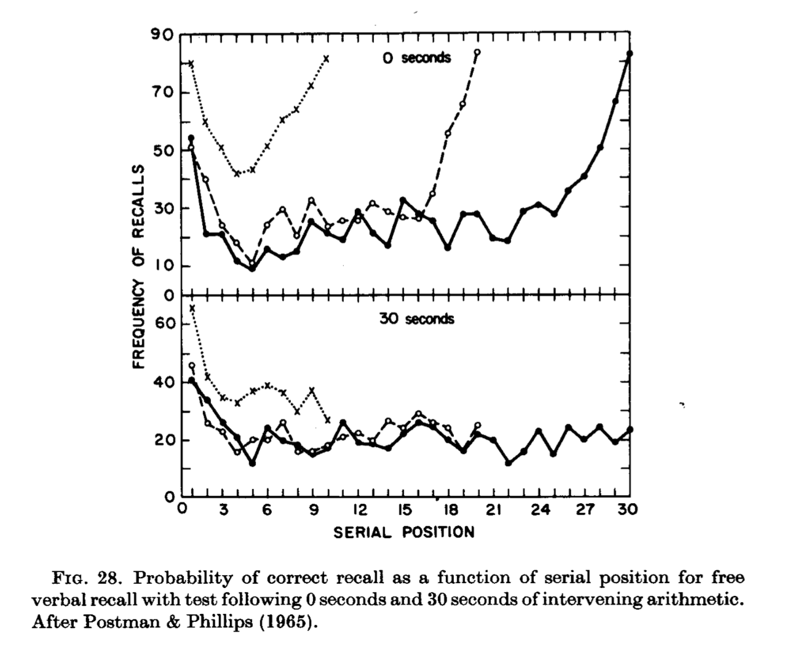

8 Memory I
Abstract
This chapter overviews the beginnings of memory research in cognition, covering a few early researchers, the emergence of different research traditions in the study of memory, and the information-processing approach to memory.
8.1 Some questions about memory
What is it like to remember something from your past? How many events can you remember? Why can you remember something from years ago, but forget new information from seconds ago? How do you preserve your experiences so they can be remembered later on? Why is it sometimes hard to remember something, but later the answer pops into mind? How can you improve your memory? How can you forget things you don’t want to think about? What other animals besides humans have memories? How are memories encoded, stored, and retrieved in the brain? How do people use their environment to help them remember things?
I could keep this list of questions going and I’m sure you could too. I find all of these questions about memory very interesting, and even though memory research hasn’t solved all of the mysteries, research on memory systems has yielded some answers about these questions and more.
8.2 Early Memory Research
Let’s talk about early memory research in pairs. The first pair is Hermann Ebbinghaus from Germany, and Sir Frederic Bartlett from Britain. Ebbinghaus is famous for his research on forgetting, and Bartlett is known for his book on ‘Remembering’. Both of them studied tasks that required repeated remembering, and both made inferences from task performance about memory processes.
The second pair is Bluma Zeigarnik from Lithuania, and Hedwig von Restorff from Germany; two female psychologists who discovered memory phenomena during the behaviorist period, and whose findings were subsequently named after them: the Zeigarnik effect, and the von Restorff effect.
8.2.1 Ebbinghaus’s Forgetting
Hermann Ebbinghaus (1850 – 1909) is credited with the first experimental investigations of human memory. His methods still resemble many aspects of modern memory research. Working in Berlin, in 1885, he published “Über das Gedächtnis. Untersuchungen zur experimentellen Psychologie”, later translated to English as “Memory: A Contribution to Experimental Psychology”(Ebbinghaus, 1885).
8.2.1.1 What did Ebbinghaus do?
Remember the chapter on associationism and the philosophers who explained the mind by associations between ideas? Ebbinghaus could be considered an experimental philosopher who tested philosophical principles of association with experiments. He was the first to systematically measure rates of learning and forgetting.
8.2.1.2 Methods
Ebbinghaus devised a serial learning task to measure how much practice was required to recite of a list of items from memory. He used artificial stimuli so that pre-existing familiarity with the items would not interfere with the learning process. His stimuli were nonsense syllables 1 with a CVC structure (consonant-vowel-consonant), like the ones in Table 1 below. Ebbinghaus noted making over 2300 syllables for his experiments. He was also a remarkable subject and conducted all of his experiments on himself.
In 2015, a pair of researchers from Amsterdam attempted to replicate Ebbinghaus’ procedure and results (Murre & Dros, 2015). They followed the original procedure closely and found similar results, so let’s use their results to take a closer look at Ebbinghaus’s forgetting work.
First, the task is very laborious. It involves a single person learning many long lists of nonsense syllables. If you have ever suffered to memorize something like a long poem, or piece of music, the Ebbinghaus procedure could be your worst nightmare.
Table 1 shows a single list of nonsense syllables similar to the ones used by Ebbinghaus, and in the replication study. Each nonsense syllable was created by randomly choosing triplets of consonants, vowels, and consonants 2. Ebbinghaus, and one of the authors from the replication, learned to recite whole lists, just like this, one row at a time, perfectly from memory.
| 1 | 2 | 3 | 4 | 5 | 6 | 7 | 8 | 9 | 10 | 11 | 12 | 13 | |
|---|---|---|---|---|---|---|---|---|---|---|---|---|---|
| 1 | FIV | LUR | GUP | GUB | DIR | VOG | DIR | XUG | VED | KIB | XIR | QOQ | ZUQ |
| 2 | XAY | CIT | QOK | GEG | JEF | LUL | MOH | LEM | QIQ | QAP | DAC | VEF | TAQ |
| 3 | QOF | NEV | LOS | DUC | KER | YOQ | LIX | CIB | BUJ | JUY | JUW | KAP | BIH |
| 4 | KIJ | YAD | DUQ | WIW | YUS | XOD | COC | QEC | VIP | XAW | ZET | WIJ | SUJ |
| 5 | JEL | FOS | BAK | HIL | WUJ | DUW | VEQ | JIQ | VOV | GIF | KAW | JIM | JIY |
| 6 | NEL | BUL | CIV | NOL | GEF | LOH | POV | WUK | QIN | MAJ | RUW | GOF | QUW |
| 7 | TUL | KEC | POZ | KAV | LIK | ROH | KOD | ZOL | ZEM | YIY | ZUW | KAL | XOX |
| 8 | BOZ | TEY | QAX | GAF | YAJ | LEC | LOY | JIS | ZOM | HIW | VIQ | FOJ | ZAY |
In the first phase, lists containing 8 rows of 13 nonsense syllables were learned to a criterion called “one-time perfect”. One-time perfect meant to recite a whole row, in correct order, without aid and from memory, one time perfectly. To get to “one-time perfect”, the syllables were practiced by reading a row out loud in order, one at a time. Practice attempts were repeated as many times as necessary. After one perfect recitation, the next row was learned and so on. There was a rigorous learning schedule spread over many days so that a total of 70 lists could be learned. For each list, the number of practice attempts necessary to achieve the first “one-time perfect” recitation were measured.
In the second phase, each row was re-learned after a delay. The delays were 20 minutes, 1 hour, 9 hours, or 1, 2, 6, or 31 days. After each delay period, rows were shown again and relearned. The number of relearning attempts to get to “one-time perfect” again were measured.
8.2.1.3 Original Learning
Ebbinghaus assumed that a process of learning new associations was necessary for him to accomplish the feat of reciting a single row of nonsense syllables by memory. Prior to establishing new associations he was unable to recite all of the syllables from memory. However, practicing was assumed to establish associative connections between syllables. After enough practice attempts it became possible to recite a row of 13 nonsense syllables, at least one time from memory. Some kind of new learning must have happened to enable the recitation.

The first phase of the experiment measured the number of practice attempts needed to learn a row of 13 nonsense syllables. Reproduced results from phase one of Murre & Dros (2015) are shown in Figure 1. The blue line indicates that an average of 30-32 practice attempts were needed to memorize each row of nonsense syllables. 3
8.2.1.4 Savings in Relearning
Ebbinghaus was more interested in results from the second phase that would provide a measure of forgetting. For example, what would happen to his ability to recite a row of nonsense syllables if he waited 20 minutes, 1 hour, 9 hours, or up to 1, 2, 6, and 31 days before trying to recite the list over again? He measured savings in re-learning to find out.
If memory for a learned row was not perfect after a delay, then it would have to be relearned. The question was how many relearning attempts would be needed to reach the same criterion as before (one-time perfect). If it took 30 practice attempts in the original learning phase, would there be any savings in relearning? That is, would the number of relearning attempts be less than 30? The data from the original and re-learning phases are shown in Figure 2.
The blue line shows the number of attempts needed during original learning. The black line shows the number of attempts needed during re-learning. The y-axis shows the number of attempts, and the x-axis shows the temporal delay between original learning and re-learning.
What happened after a 20 minute delay? First, memory for a learned row was not perfect. Instead, about 16 re-learning attempts were needed to recite the list again one-time perfectly. However, even though a row could not be remembered perfectly after a 20 minute delay, the savings in re-learning showed that the original learning was “gone, but not completely forgotten”. Savings in relearning was computed as the difference between original learning and relearning, or \(30.77-16.26 = 14.51\). In other words, 14.5 practice attempts were saved, or not necessary, in getting back to the same level of performance. Re-learning the lists wasn’t like riding a bike 4, but it wasn’t like starting from scratch either.
What happened as the delays increased up to 31 days? There are two ways to look at this. First, the larger plot on the left shows the number of relearning attempts go up from 16 to 28 as the delay increases from 20 minutes to 31 days. This shows a decrease in savings. As the delay increased, re-learning was more like starting from scratch. This suggests the ability to recite a row was degrading more and more over time. However, even by 31 days there was still some small amount of savings in relearning, suggesting the ability had not degraded entirely.
Second, the smaller plot on the bottom right shows the same findings, except the x-axis expresses delay in minutes. Here, the x-axis goes from 20 minutes to 44640 minutes (the number of minutes in 31 days). This way of plotting the data makes it easier to see the exponential trend in the number of re-learning attempts. The exponential trend suggests that forgetting, or the learning associated with this ability degraded at different rates over time.
Specifically, the rate of forgetting was very high after initial learning, but the rate slowed down over time. For example, between 0 and 20 minutes from original learning the number of relearning attempts went from 0 to 16. By two days, the number of relearning attempts went to 24. However, the rate of forgetting was greatly reduced as the delay became longer. Between 2 and 31 days, the number of re-learning attempts went from 24 to 28. Taking re-learning attempts as a measure of forgetting, there was a big increase from 0 to 24 in the first 2 days, but a much smaller increase from 24 to 28 over the next 29 days.
8.2.1.5 Exponential Forgetting

In other words, Ebbinghaus found an exponential forgetting curve. Exponential forgetting is like going to Las Vegas and spending most of your money on the first day, and then losing the rest of it slowly over a week. Figure 3 depicts an exponential forgetting curve. The rate of forgetting is not constant across time. Instead, the rate of forgetting is very high after initial learning but then slows down across time.
8.2.1.6 Spacing effects
Ebbinghaus also demonstrated the effects of spaced vs. massed practice on learning and memory performance. Spacing refers to adding breaks between practice attempts. Massing practice means to lump attempts together and take few breaks between attempts. Ebbinghaus showed that spacing practice attempts improved his memory performance.
If you search Google Scholar with terms like “massed practice”, “spaced vs massed practice”, and “distributed practice”, you will find many papers on practice schedule effects. In general, a practice schedule can change how fast you learn something and how long you retain information. For example, a meta-analysis in 1999 looked at evidence for spacing effects in 63 studies covering a wide range of different tasks (Donovan & Radosevich, 1999). Overall, they found that spaced practice benefited learning compared to massed practice. So, should you always space practice to improve your learning? Well, they also found the size of the benefit depended on the task. So, before you space all of your practice, try searching Google scholar for the skill you are trying to learn, and see if there are recommendations for optimal practice schedules. You might find evidence-based suggestions for making your skill learning process more efficient.
8.2.1.7 Serial Position effect
Ebbinghaus also showed early evidence of serial position effects in memory. If you search “serial position effect” in Google Scholar, you will again find hundreds of papers on the phenomena. The basic finding is that memory for items in a list can depend on the order of the items in the list. In many cases there are primacy and recency effects. Memory is often better for the first (primacy) and last items (recency) compared to the items in the middle.
8.2.1.8 Process explanations
It is worth flipping through Ebbinghaus’ book on his memory research, available here from the internet archive. He ran many experiments to test ideas about the underlying operations of memory processes. For extra reading, check out his chapter VII, called “Retention and obliviscence as a function of the time”. Here, Ebbinghaus considers four explanations about how a memory process may hold onto knowledge over time (“retention”) and/or lose knowledge over time (“obliviscence”). In his discussion, he anticipates the concept of memory traces which is important in many modern memory theories.
8.2.2 Bartlett’s Remembering
Sir Frederic Bartlett (1886 - 1969) was a British psychologist, and is well-known for his book “Remembering” published in 1932 (Bartlett, 1932) covering his extensive experiments on remembering, imaging, and perceiving. Bartlett took the word remembering very literally and his research helped establish a reconstructionist view of human memory. Before discussing the reconstructionist view and Bartlett’s experiments that supported it, let’s begin with a few simple– but, wrong –physical metaphors of memory.
8.2.2.1 Memory is a file drawer
File drawers are physical systems for storing and retrieving information, so they are a kind of “memory” system. Information on paper is placed into folders and stored in cabinets. The files could be tagged for ease of later retrieval. Information is retrieved by looking up the correct file and taking it out of the file drawer. The only contents saved in memory are what goes into the file system. Failures of memory could include, 1) not getting placed into the drawer, 2) getting misfiled, and 3) destruction of information due to some outside source (e.g., water, fire), or physical decay of the files over very long periods of time.
8.2.2.2 Memory is a camera
Cameras, like the ones on modern cell phones, can record and save streams of visual and auditory information. Cameras provide a veridical record of light in the world hitting the lens over time. In this system, memory failures could include failing to capture an event in the record, noisy input quality, noisy playback quality, or degradation of the storage material.
8.2.2.3 Memory is a bent-wire
One more quick metaphor: memory as a bent-wire. Consider a brand new metal wire that is completely straight. The wire is bent into a clothes hanger, then bent into a hook for reaching something, then it is thrown out, and bent in the trash, and so on. The wire doesn’t have a hard drive where it can store pictures of times it got bent. Nevertheless, the bends in the wire preserve aspects of the wire’s history of experiences. In this sense, the wire is a memory system whose shape represents imprints from prior experiences.
8.2.2.4 Memory is none of these things
The above physical metaphors for memory have some properties in common with human memory. The file drawer and camera can encode, store, and retrieve information, and make errors and mistakes. However, people display many more interesting memory failures than the physical metaphors for memory. The physical memory devices do not produce interesting memory distortions. They do not remember new information that was not in the file, or on the hard-drive. Importantly, people produce memory distortions all of the time. Two examples of memory distortions are claiming to remember events that did not occur, or exaggerating events that did occur. Bartlett’s work is important for demonstrating evidence that memory distortions are fundamental to the process of remembering.
8.2.2.5 Memory is re-membering
The word re-member literally means to take pieces (members) that were previously together, and put them back together again. Bartlett imagines memory as a humpty-dumpty process, where the broken up parts of previous experiences are put back together again by memory. On this reconstructive view, memories are not like replaying a video from a past experience. Instead, the memory process reconstructs elements of prior experiences into a whole. These reconstructed experiences feel like events from the past, but they are approximated reconstructions of those events. Some modern memory theories take this stance even further and claim that people do not really have “memories” that are stored or retrieve at all. Instead, we have the mental ability to construct experiences, both new ones (as in dreaming or imagination) that feel new, and new ones that convincingly feel like they occurred in the past.
Bartlett assumed that remembering is guided by an overarching schema, or general knowledge about to-be-remembered events. He assumed it was possible for memory to become distorted during reconstruction, and that reconstructed events could become shifted toward the schema used to aid reconstruction. If some information was missing during reconstruction, then those features of the reconstructed memory would be substituted by the schema, thus rendering the recreated memory more similar to the general schema than the peculiar details of an original experience.
8.2.2.6 Method of Serial Reproduction
Bartlett’s reconstructionist view of memory was informed by his “method of serial reproduction”. This was similar to Ebbinghaus’ method of learning lists by practicing them over and over. The major difference was that Bartlett gave his subjects something to remember over-and-over again. He measured how the content of each remembering attempt changed over time. We look at two examples: the war of the ghosts, and l’portrait d’homme.
8.2.2.7 War of the Ghosts
Bartlett had subjects read a story called the “War of the Ghosts”, which was a folk-lore story about indigenous Americans. Then, he asked his subjects to write down the story from memory. After they were finished, he had them write it down again from memory. Then, again, and again. It’s a little bit like the game of telephone, where a message is passed from one child to another, and the final message is very different from the first message. Bartlett found similar results in his serial reproduction task, where subjects were playing telephone with their own memory of a story.
As people kept reproducing the story from memory, they introduced new details and left out original details. Additionally, the retold story seemed to head toward a common direction. It was as if his subjects pre-existing biases and general notions about the characters and situations in the story were guiding how they retold the story. Bartlett used these observations to suggest that memory reconstruction was being guided by “schemas”. Schemas are scripts that are supposed to guide how memory reconstructs information. Bartlett’s schemas often referred to central tendencies or stereotypical generalizations about the content he showed his subjects.
8.2.2.8 L’Portraite D’homme
Another example of serial reproduction involved drawing faces. He gave people a picture of a mask. Then he took the picture away, and asked his participants to draw the it from memory. Over days and months, he had the same people attempt to draw the picture from memory many more times. The astonishing finding shown in Figure 4 was that as people re-drew the picture, it became less and less mask-like, and more and more face-like.

Bartlett interpreted this finding as evidence that people reconstructed their memories based on schemas. His participants knew they were attempting to reconstruct face-like thing, and as they redrew the item from memory, over time they replaced elements of the original mask with elements from their schema for faces. With enough reproductions, the participants were relying mostly on their schematic knowledge, and their drawings slowly morphed into faces rather than masks.
8.2.2.9 Reproducing Bartlett
Some of Bartlett’s experiments and specific findings have not been replicated by other researchers. For example, in 2012 Carbon and Albrecht (Carbon & Albrecht, 2012) tried five different replications of Bartlett’s face drawing procedure, but they found no evidence that reproductions became more face-like over time. They used Bartlett’s mask stimuli, and even stressed to subjects that the task was to redraw the “face” from memory. They found drawings changed over reproductions by becoming less detailed, but the drawings did not converge on a prototypical face.
At the same time, some of Bartlett’s results have been replicated. For example in 1999, Bergmann and Roediger (Bergman & Roediger, 1999) replicated a version of the war of the ghosts. They were able to show that subjects did introduce major and minor distortions to recall of the story during a first, second, and third recall session. As they note, if you read Bartlett’s book (which is highly recommended and fun to read), you will find he did not explain his experimental protocol in precise detail, which makes it difficult to repeat what he did.
Finally, although some of Bartlett’s findings may not stand the test of time, there are many reproducible findings showing that memory can be distorted in interesting ways. So, even though memory reconstruction may not always head toward a schema, memory does appear to involve some kind of constructive process capable of returning accurate and distorted impressions of past experiences.
8.2.2.10 Meaningful memory
One of the big implications of Bartlett’s ideas is that memory can depend on meaning. Again we will unpack this principle throughout because it is obvious, at least to me, what it means for something to be meaningful. In a general way, your memory for particular events can be influenced by how you think about and understand those events. In other words, it’s not just the number of times that you practice something, or whether or not you include breaks in your practice schedule that will makes things stick. Making new things meaningful with respect to old things you already understand can influence the process as well.
8.2.3 The Zeigarnik effect
Research on human memory has yield many experimental procedures intended to demonstrate a particular kind of memory phenomena, or test an explanation of a phenomena, or both. Many of the phenomena are also called “effects”, sometimes credited person who first demonstrated the phenomena. And, just like we saw earlier with Bartlett, sometimes the effect and explanation becomes well-known, even if it isn’t reliably reproduced. Another example in this vein is the Zeigarnik effect.
In 1927, Bluma Zeigarnik conducted several experiments showing that uncompleted tasks are remembered better than completed tasks (Zeigarnik, 1968). I’ve always thought of the Zeigarnik effect as the “to-do list” effect. I think about tasks on the list, but I don’t think about tasks I’ve already completed. Sadly for me, I often forget to think about the tasks on the list too…
In any case, Zeigarnik ran several experiments with a simple design. Participants were given a variety of tasks that took about 3- 5 minutes to complete. The tasks could be math, or drawing, or threading a needle. Partway through some of the tasks, she interrupted people and asked them to start on a new task. At the end of the experiment, the participants had completed some of the tasks, and others remained incomplete. Zeigarnik then had participants recall all of the tasks. Across several experiments she reliably found that people recalled more of the uncompleted tasks than the completed tasks. One explanation was the goal to a complete a task created psychological tension that could only be resolved by completing the task. This goal-based tension is not resolved when a task is interrupted, and leads to differences in memory completed and uncompleted tasks.
In a recent historical review of Zeigarnik’s life and research, Macleod notes that her findings have been difficult to replicate. For example, 1968, Van Bergen published several replication attempts and found that her participants did not show systematic differences in their memory for completed and uncompleted tasks. He also notes that additional research on the basic effect of “task-interruption” on later recall of tasks from memory has not been forthcoming. So, in many ways the status of this effect as a reliable influence on memory remains unclear.
I bring up this example because it reflects several broader issues in memory research. One is that some findings are not reproducible for many reasons. Maybe the effect happens for some people and not others, or maybe it just doesn’t happen much at all. Individual memory effects can be neat an interesting. For example, after learning about Zeigarnik effect myself many years ago, I thought, “that’s neat…maybe I should complete some tasks on my to-do list so that I no longer think about them”. Last, the research pursuit of individual memory effects can be a red-herring, especially if the motivation for examining the effect is unclear, and the effect is not reproducible.
8.2.4 The von Restorff effect
A historical review of Hedwig von Restorff and her now famous demonstrations that distinctiveness influences memory (Von Restorff, 1933) is also provided by Macleod (MacLeod, 2020). Von Restorff applied the figure/ground concept from Gestalt theory to memory domain. A basic idea from Gestalt theory was that representations of individual experiences are holistic, involving objects (figure) and their surrounding context (ground). Von Restorff took this idea and asked how memory might depend on factors that isolate figure from ground. In perception a chameleon can be camouflaged and difficult to isolate from its surrounding. Or, a bright and conspicuous flower can stand out in a distinctive way, against dull colorless backgrounds. Would the same principles of distinctiveness apply to memory? It turns out, they do, and unlike the Zeigarnik effect, Von Restorff’s findings have been reproduced many times, and in different ways. Here is what she did.

Participants were tested on their memory for 5 lists. Each list had 8 pairs of items. An example of a list is presented in Figure 5. Each list had four pairs that were similar. These were called “massed” pairs. Think of them as providing a dull grey background. The other four pairs were all different. These were called “isolates”. They are like a colorful flower, in that they stand out from the massed pairs. The “massed” pairs in the list below were the four pairs of nonsense-syllables. The “isolates” were the remaining four pairs.
8.2.4.1 Counterbalancing
Von Restorff used a technique called counter-balancing in her experiment. Counter-balancing can be used to reduce the concern that the outcome of the experiment was due to a stimulus confound. For example, Von Restorff would show participants her lists, have a conversation brief conversation with them, and then ask the participants to recall each pair from the list. Her question was whether the “isolated” pairs would be recalled with greater accuracy than the “massed” pairs. In the list above, this would mean better recall for “# – +, 89 – 46, red square – green square, and S – B”, compared to the other four pairs that were all nonsense-syllables. This is what Von Restorff found, but you might be concerned that there was a stimulus confound. For example, maybe nonsense syllables are hard to remember compared to these other pairs.

Von Restorff guarded against the stimulus confound interpretation by counter-balancing. This is why there were 5 lists in total. In the first list, the massed pairs were nonsense syllables, but the “isolated” pairs were used for the massed pairs in the other four lists. For example, the second list could have four massed symbol pairs (like # – +), and the remaining four pairs would be “isolates” from the kinds of pairs. The third list could have four massed number pairs, and so on. The counterbalancing scheme is illustrated in Figure 6.
8.2.4.2 Memory and Distinctiveness
Importantly, Von Restorff averaged across the counterbalancing lists to look at the effect of “massed” vs “isolated” pairs on memory. She found that “isolated” pairs were recalled at higher rates than “massed pairs, and she found this reliably across the lists. For example, when there were four symbol pairs (like list 2 in the figure), memory for the other isolated pairs (in yellow) was better than memory for the symbol pairs. In list 3, memory for the four number pairs was worse compared to the isolated pairs. To quote from the English translation, across the conditions,”the number of hits is higher in the isolated constellation than in the corresponding massed constellation, regardless of type of material.” This last point is intriguing. Von Restorff had shown that particular stimuli were more or less memorable, not in and of themselves, but in relation to how distinct they were from other stimuli in the set.
The finding that distinctive items can be remembered better than non-distinctive items has been reproduced many times, with many different kinds of stimuli. However, although the finding is well known, explanations of the finding continue to be debated. At this juncture we will not head into that debate just yet. One of the reasons for the debate, is that there are many different models and theories of memory, so naturally there are differing perspectives on the role of distinctiveness in memory.
8.3 Multiple Memory Systems
In the previous section we saw some examples of early memory research. Early memory research is not so different from modern memory research. There are many similar experiments, findings, explanations and applications. However, my sense is the modern literature keeps growing and diverging along different paths, rather than converging on similar themes. This is not a criticism of the literature, rather an observation that can aid our process of reviewing the modern literature. Human memory is complicated and so are the humans that study human memory. Just as we have seen that a domain like behaviorism included multiple perspectives, the domain of memory has many perspectives too.
I have titled this section “Multiple Memory Systems” to alert us to the fact that there are many perspectives about memory. I will apply the “usefulness” criterion here, and suggest that the different perspectives have found some support often because they are useful for some reason or other. At the same time, the different perspectives can point in different directions and highlight some findings or applications at the expense of “forgetting” about others.
I already alluded to one outlier perspective stemming from Bartlett’s reconstructionist perspective on memory. An extreme reconstructionist could argue that memory systems do not encode, store, or retrieve memories because memories themselves are not real psychological objects. They instead result from a constructive process that can generate or simulate past experiences in a way that feels “real”. In this case, memories, false-memories, dreams, and imagination are all created by the same construction process. The only difference is that people make different attributions about what those mental experiences refer to, sometimes attributing mental experiences to a real past experience, or other times attributing them to a dream or imagined experience. We will revisit this idea again, especially in the chapter on judgment and decision-making where attribution theory is commonly used.
In the next section we are going to review a more mundane metaphor about memory, which I call the information processing metaphor of memory. In later chapters, especially the chapter on computational modelling, we will examine a “single-system” tradition of theorizing in memory research. This tradition emphasizes the algorithms of memory processes over the taxonomy of memory compartments.
Finally, as we wade into newer territories keep in mind a few background questions. What is the evidence for the claim? What is the basis for the explanation? We will come across new claims, and before accepting them it is worth examining what evidence exists for the claim. This could involve inspecting the experimental design to see whether it is capable of producing a high standard of evidence, suitable for justifying the claim. We will come across new explanations too, and it will be worth scrutinizing those as well.
8.4 Memory as information processing
The previous chapter on information processing identified cybernetics as a transitional domain between behaviorism and cognitivism. Concepts from Shannon’s mathematical theory of communication were introduced, such as the concept of a communication channel between a sender and receiver; and, his formula for measuring “information” or uncertainty in a set of stimuli. We discussed how those concepts were applied to studies of reaction time performance. Throughout the late 1950s and 1960s, information processing concepts were applied to human memory. In terms of parallel developments, this time period coincided with the emergence of digital computers; Shannon’s information theory was also relevant to computer technology. In psychology, metaphors from information theory and computer technology were borrowed as tentative explanations of memory processes. In the next sections we will look examples of both.
First up is George Miller’s “Magic number 7” paper (Miller, 1956). This paper reviewed successful applications of information theory to problems in perceptual judgments, and an attempt to apply similar principles to memory. It focuses more on the information processing metaphor, and less on the computer metaphor. Major themes include capacity limitations in information processing, and roles for “mental coding” (Miller’s chunking) to influence memory and get around capacity limitations.
After Miller, we head into a discussion of memory models relying on computer metaphors, which appeared to motivate distinctions between short and long-term memory, and later models of working memory. This tradition of theorizing has developed into a “multiple-systems” view of memory, that involves many little modules of memory that do different memory tasks. As we go into this research, I would encourage you to remember that we are still talking about metaphors, and provisional explanations of memory.
8.4.1 Miller’s Magic Number 7
George Miller (1920-2012) was American psychologist, who is often associated with leading the transition from behaviorism to cognitivism. In 1956, he wrote an influential paper called, “The magical number seven, plus or minus two: Some limits on our capacity for processing information” (Miller, 1956). This paper probably introduced many psychologists to concepts from information theory. I think the contribution of this paper is often highly compressed to ideas implied by the title. For example, you may have heard of this paper before, and perhaps were told that your short-term memory can hold about 7 things…plus or minus two. Indeed, after the Miller paper, many researchers have spent time invoking similar ideas, and attempting to measure the “capacity” of one kind of memory system or another. We will get to short-term memory in the section. In this section, the focus is not on how many things short-term memory may or may not be able to “hold”. It is instead on Miller’s attempt to use information theory to establish common principles between perceptual judgment and memory.
8.4.1.1 Absolute Perceptual Judgment
Miller began by stating, “My problem is that I have been persecuted by an integer”. He was following the positivist tradition in science and attempting to discover natural laws in psychology. It was an exciting time because Shannon’s information theory was being applied to basic tasks in psychology, and Miller was noticing a regular pattern in the data. The metaphor of the day was that people were like a capacity-limited communication channel. Following the metaphor, people would be limited in the amount of information they could process, where information is defined in terms of bits (see previous chapter for a reminder). Miller was “persecuted” by an integer because he saw what appeared to be a lawful relationship across a variety of perceptual judgment tasks. More or less, people appeared to process information in a limited-capacity way, and the capacity limitation seemed pretty consistent, it involved close to the same number of bits.
If we converted Miller’s title to bits it wouldn’t be as catchy as, “7 plus or minus two”. For example, 7 items is 2.8 bits, 9 items is 3.17 bits, and 5 items is 2.32 bits. Nevertheless, in the first part of his paper, he reviewed evidence from the literature on absolute perceptual judgment showing that people had similar “capacity-limitations” across tasks.
An absolute perceptual judgment task starts out simple, but gets more difficult as the number of alternatives increases. In this way, it is a little bit like the choice-reaction time procedure, and the observation that choice-reaction increases as the set-size (number of alternatives) increases. The basic task involves un-speeded stimulus identification. On each trial you are shown one stimulus from a set, and then asked to identify it. Miller’s first example was absolute judgments of pitch, so let’s use that.
Have you ever heard of absolute pitch? Some people are able to hear a tone and immediately identify the name of the note on an instrument. The ability is pretty rare, and most people are not able to recognize the exact pitch of a tone. The piano represents the difficulty an absolute perceptual judgment task for pitch quite well. A full-size piano has 88 keys that produce individual sounds by hitting strings. The sounds range in pitch going up by one semi-tone for each note. I took piano lessons as a kid, and part of the lessons involved an absolute pitch judgment task (I didn’t know it at the time). Here is what happened.
I turned away from the piano and closed my eyes. My piano teacher then played a note on the piano. I had to guess what the note was by naming it. Piano notes have names like, A, B, C, D, E, F, G. It turns out I don’t have absolute pitch. And, I wasn’t very good at hearing the note and identifying it’s name.
However, it is possible to make the task easier by reducing the number of alternatives. For example, identifying any note on the piano is hard when there are 88 possibilities. But, even without absolute pitch, it is easy to tell two notes apart from each other. For example, people with normal hearing can tell apart a really high pitched note from a really low pitched note. In this way, if we made an absolute pitch identification task with only two alternatives (low note versus high note), people would hardly make any mistakes at identification. They would hear one note a time, and easily identify the “low” note from the “high” note.
Let’s imagine people would have 100% accuracy on this very simple pitch judgment task with only two options. What do you think would happen to stimulus identification accuracy if the number of options increased? For example, what happens if the task has three alternatives, or four, or five, or more? If you are like me, and you do not have absolute pitch, then the typical outcome is that the task gets harder, and at some point you start to make mistakes. In general, for some range of options your accuracy at identifying individual stimuli from the set will be near perfect. However, as the number of options increases, you will start making mistakes.
8.4.1.2 Pollack’s pitch judgment results
Miller cited work by Pollack(Pollack, 1952), who had applied information theory measurements to absolute pitch judgment. Pollack ran an experiment very similar to the thought-experiment described above. He gave people a tone judgment task, and varied the number of tones in the set. He had sets of 2, 3, 4, 5, 6, 7, 8, 10 and 14 tones. Subjects were given tones from one set. On each trial they heard a tone, then they had to identify with a number, (e.g., “this is tone number 7”). This general task is also called the “method of absolute judgment” in psychophysics.

Figure 7 shows the data from Pollack’s task in a conventional way, plotting accuracy against set-size. The three dots in green show examples of perfect performance in the task. People are able to absolutely identify a tone with perfect accuracy when there were 2, 3, or 4 tones in the set (this is like a toy piano with 2, 3, or 4 total keys). However, the dots in red show what happens as the number of tones increases past 5. Accuracy gets worse and worse. The percentage of correct responses goes down and down. The experiment only went up to set-size 14, and the rest of line is a statistical estimate of what would happen to accuracy if the set-size was increased further.
8.4.1.3 Translation to Channel capacity
Miller was reviewing work by Pollack and others who had the insight to interpret their findings from the point of view of information theory. This involved applying Shannon’s mathematical formulas to the data and re-plotting it. Instead of plotting how accuracy changed as set-size increased. It was possible to plot the very same data in terms of the amount of information in the stimulus set, and the amount of information transmitted across a channel. Remember, we can convert the number of unique elements in set into the number of bits necessary to represent all the unique elements. 2 elements require bit, four elements require 2 bits, 8 elements require 3 bits, and so on.
Figure 8 shows same data from the task above replotted using information theory. Notice, the first three dots fall exactly on the line, this is the same as perfect performance for set-sizes 2, 3, and 4. However, set-size is now called “input information” and expressed in bits (2 = 1 bit, 3 = 1.58 bits, 4 = 2 bits). The y-axis converts accuracy into a measure of bits called “transmitted information”. Although the data is exactly the same as before, the metaphor is different. Looking at the graph in terms of information theory, it looks like performance hits a plateau. As the amount of information in the input (e.g., set-size) increases, the amount of transmitted inforamtion levels off. The set-size can be increased to any number of options, but it seems that people are hitting an upper bound of around 2.5 bits in this task. This upper bound is called the channel capacity in information theory.
8.4.1.4 Generalization across perceptual tasks
Miller’s paper reviewed many absolute perceptual judgments besides tone judgments. They were all basically the same except the type of stimulus was changed. For example, instead of pitch there were similar experiments using absolute judgments of loudness. Other examples were absolute judgments of saltiness, or points on a line. All of the tasks involved splitting the stimulus dimensions into sets of different sizes (like pianos with different numbers of keys), and asking people identify specific items from a set.
Miller described how the data from all of the tasks could be plotted using information theory concepts. And, he noted similar channel capacities across all of different perceptual judgments. This is where the title, “7 plus or minus two” comes from. Seven items is the same as 2.8 bits. The channel capacity for identifying tones was around 2.5 bits, or about 5 items. Some of the other channel capacities were a little lower or higher. The fact that the channel capacities were all very similar, even though the stimuli were all very different suggested law-like behavior. It seemed promising that the descriptive language of information theory could be used to state laws of information processing capacity in perceptual judgments. Miller had hoped the apparent principles could extend even further, past perception, to the domain of immediate memory.
8.4.1.5 Immediate memory span
Miller had noticed a correspondence between limitations in absolute judgment tasks and limitations in tasks measuring immediate memory span. Immediate memory span is how many items you can remember over a short period of time. The correspondence was the number 7. Absolute perceptual judgments seemed to be limited by set-sizes of around 7. And, it was already well-known that people had short immediate memory spans, with spans also around 7 items.
How is immediate memory span can measured? One method is to provide a series of items, and then have a subject repeat them back. The series starts with a small number of items. And the number of items is increased until the subject fails to repeat the series back perfectly. Immediate memory span is the number of items in the list that you can recite back without making mistakes. The number 7 is just a rough description of typical findings from immediate memory span research. People can usually recite back lists of 7 things without making errors. However, people start making errors when the list gets longer and longer. For example, a phone number with seven digits isn’t too hard to remember long enough to write down or write into your contact info. Longer sequences are typically harder to remember, especially when extended practice is not allowed (like in the Ebbinghaus procedure).
Miller thought the spans of roughly 7 in absolute perceptual judgment and immediate memory could be related, possibly pointing to a common process limiting both perception and memory. However, the whole point of his paper was to raise the possibility as an idea, and then provide evidence that it wasn’t true. He concluded that any similarities were just an annoying coincidence. Miller arrived at the conclusion by distinguishing between bits of information, and chunks of information. He suggested that perceptual decision is limited by bits, and that immediate memory was limited by chunks. So, let’s look at chunks and bits.
8.4.1.6 Chunks vs bits
Miller describes an immediate memory experiment by Hayes [] to make his point. That experiment measured immediate memory spans with different kinds of stimuli. These included binary digits, decimal digits, letters, letters & digits, and items from a pool of 1000 words.
For example, I could give you a series of 0s and 1s (binary digits), and see how many you can remember in a row. Try it out, read this series one time from beginning to end. Then, try to write down the series from beginning to end without looking.
0110100010100101
If you count how many you got correct from left to right, this is another way to measure immediate memory span. Instead of binary digits, the list could be decimal digits:
4986754322345112
Or, letters, letters and digits, and so on.
Miller again used information theory, but this time he distinguished between the information in a stimulus and the information across a list of stimuli. For example, a single binary digit can be represented by a single bit. A list of 7 binary digits then required 7 bits.
A decimal number is a different kind of stimulus, and requires more bits to represent a single stimulus. For example, a single decimal could any of the 10 symbols between 0 and 9 (0,1,2,3,4,5,6,7,8,9). According to information theory, it takes 3.32 bits to represent a equi-probably choice between 10 alternatives. Therefore, a list of 7 decimal digits would require 3.32 bits * 7 = 23.24 bits.
The same calculations were made for the other stimulus sets. There are 26 letters, requiring 4.7 bits per letter, and 32.9 bits for a list of 7 letters. There are 36 total symbols combining letters and digits, requiring 5.16 bits per symbol, and 36 bits for a list of 7. If 1000 words are taken as 1000 unique symbols, then 9.96 bits are required to represent a single word. A list of seven words would require 69.7 bits.
Here is the first take-home message of Miller’s information theory analysis of the different stimulus sets: some stimuli carry more information per item than other stimuli. For example, binary digits carry less information than decimal digits, because binary digits have few possible symbols than decimal digits. Decimal digits carry less information than letters. Letters carry less information words. By information theory definition, stimuli with more possible symbols carry more information than stimuli with fewer possible symbols.
So, what happened in Hayes immediate memory span experiment? Remember, he measured immediate memory span for lists from the different stimulus sets I just described. Does immediate memory span depend on the amount of information in the stimuli? The answer is, not really, no, not so much.

The immediate memory span data is shown in Figure 9. The y-axis shows the average immediate memory span, and the x-axis is the amount of bits needed for each kind symbol. The take-home message that immediate memory span was about 7 items for all of the stimulus sets. It was a little bit higher for binary digits, compared to words, but nowhere near as high as it should be. If people could handle 7 words just fine, then they should have an immediate memory span closer to 40 for binary digits (which required fewer bits than words). Instead, the spans were pretty similar across stimuli.
Miller suggested that immediate memory escapes capacity limitations imposed by information at the level of stimulus sets through a recoding process. He called this process chunking.
At the level of stimulus information, seven bits would be required to code seven binary digits. However, as discussed earlier 69.7 bits would be required to code seven words (from a set of 1000 words). It seemed that people were totally capable of remembering 7 words, even though the amount of stimulus information required was way higher. How could this be? Miller proposed that immediate memory was recoding the stimulus into chunks, or individual units. This allowed immediate memory to treat any kind of stimulus as a single chunk. As a result, the capacity of immediate memory was not limited by the amount of information in each stimulus (e.g., binary symbol vs word symbol), it was limited by the number of chunks.
8.5 On tasks, abilities, and processes
We’re about to finish up this chapter by discussing short and long-term memory. Before we do that, now is a good time to discuss some differences between tasks, abilities, and processes. It can be easy to confuse one for the other. Let’s use the immediate memory span that we discussed above as an example.
8.5.1 Tasks
The immediate memory span task is a laboratory memory task, and was created as a research instrument. The task involves presenting a list of items, like numbers or letters, and then asking participants to repeat back as many as possible from memory. The number of items repeated back correctly is a measure of performance in the task, and the measurement is given a name like immediate memory span. There are many other tasks like the immediate memory span task that measure cognitive abilities. They typically have controlled properties that the experimenter can vary, and they require participants to perform the task (by following the instructions) to the best of their ability.
8.5.2 Abilities
I have been using the term cognitive ability throughout this textbook to refer broadly to successful performance in tasks that require “cognition”. For example, if you successfully completed an immediate memory span task, and your immediate memory span was found to be 10, then you clearly have the ability to perform that task, and you also have the ability to remember 10 items from the list of items you were presented.
8.5.3 Processes
I will define cognitive processes as theoretical mechanisms underlying the ability to perform a task. For example, if you were able to remember 10 items in an immediate memory span task, how were you able to do that? What were the mechanisms enabling you to perform the task, and how do those mechanisms work?
In the next section we will look at a formative cognitive process explanation of short and long-term memory from the late 1960s. We will review the theory’s proposed mechanisms of short and long-term memory, and how they work together to explain performance in a classic memory task. Then, before heading on to the last section on working memory, we will again consider relationships between cognitive tasks, abilities, and processes to entertain alternative viewpoints on the distinction between short and long-term memory.
8.6 Short and long term memory
I’m guessing you have heard of short-term memory and long-term memory. It’s OK if you haven’t. These are terms from cognitive psychology that are commonly used to describe memory abilities. We’ve all forgotten something that just happened, and maybe blamed short-term memory. We’ve all remembered something from ages ago…thanks to long-term memory. Clearly, some memories can last a long time, and some don’t. What is going on here? Why is memory behaving so differently?
One potential answer is that there are two memory systems. A short-term memory system and a long-term memory system. The short-term system is limited in capacity, so it can only hold a few things– like Miller’s chunks– for a short time. Short-term memory explains things like forgetting a phone-number right away. It went in your short-term memory system, and was easily forgotten. Perhaps the phone-number was pushed out by new incoming information. The long-term system has a much larger capacity, so it can hold many things for a long time. This explains why you can remember some events in great detail from a long-time ago.
Before we look at this idea more closely let me first make a comment about independent systems. First, the distinction between a short and long-term memory is between supposedly separate systems. There are lots of examples of separate systems in humans, especially at a physiological level. For example, we could consider different organs in the body as separate independent systems, each doing their own job in the connected network of your body. In terms of brain function, there are also different perceptual systems and brain areas mostly dedicated to processing information from each modality. I think partly because systems like these do exist, that some researchers adopt a “systems-focused” approach to cognition. In this approach, one of the goals is to find all of the systems, and then interrogate them to understand how they work.
8.6.1 Multi-store model
Atkinson and Shiffrin’s multi-store model (also called the modal model) from 1968 (Atkinson & Shiffrin, 1968) is an excellent example of an early cognitive process explanation. I will describe the model in general terms; however, the original model was also more formally presented in mathematical terms as well. This allowed the theory to generate quantitative predictions that closely matched data patterns in a variety of memory tasks. The next two figures depict how the model envisions encoding, storage and retrieval in memory.

Figure 10 shows an information flow diagram between storage locations in the multi-store model. First, environmental stimuli (external inputs to the model) are converted into representations and briefly stored in sensory registrars. The sensory register is assumed to hold onto perceptual information for a very limited time. The information in the sensory register will be lost, unless it gets transferred to the short-term or long-term store. Notice, that information from the sensory register could go either to the short-term store or directly to the long-term store. As implied by the name, the short-term store is limited in capacity and can only store a small number of items. The long-term store has a much larger capacity, and can store many items over a very long time. Finally, the model describes control operations for passing information between the short and long-term stores. These operations are described next.

Figure 11 shows the short-term store in more detail. In general, the short-term store is a temporary buffer where memory representations are kept “alive”, and subsequently transferred to the long-term store for more permanent storage. The model likens the short-term store to a rehearsal buffer. For example, have you ever tried to remember something, like a phone number, by saying it over and over to yourself? This is called a rehearsal strategy. The model suggests that the short-term store is where rehearsal takes place, and further suggests that the buffer has a limited number of slots, which means that only a few items may be in the rehearsal loop at any given time. The model also suggests that items in the short-term store are gradually transferred to the long-terms store. So, items that stay longer in the rehearsal are more likely to be fully preserved in long-term memory, because they had more time to be transferred to the long-term store. The long-term store was still vulnerable to information loss, and memory traces could decay over time, or interfere with one another during memory retrieval.
Although less clear from the figures, the model also described potential rules for retrieving information from long-term memory. For example, retrieving a representation from memory could involve a search process where a person “looks” through things in their memory until they find what they are looking for. Additionally, the search process relies on cues to aid the search. For example, if you were searching your memory for names of American presidents, at some point you might run out names, even if you felt you could name few more. In this case, you might use a cuing strategy. For example, the letters of the alphabet could help focus your memory search. Thinking about the letter “A”, could help you remember “Abraham Lincoln”; or, the letter “B” might help you remember “Lyndon B. Johnson”. Finally, the short-term system was involved in remembering information from the long-term system. For example, the short-term system could be rehearsing the cue “B”, while the search of long-term memory is conducted.
8.6.2 Serial Position, Recency, and long-term recency
The operations of the multi-store model explained performance in an impressive range of memory tasks. We will discuss its application to the serial position curve, and describe two successes of the model, and one failure to account for recency effects.
I mentioned earlier that Ebbinghaus had shown examples of the serial position effect. Since Ebbinghaus, many researchers noticed serial-position effects in experiments where participants tried to learn a list of items.

Figure 12 shows the serial position effect from Deese & Kaufman (deeseSerialEffectsRecall1957a?), obtained from a free recall memory task (see also, Murdock Jr, 1962). In this task, subjects heard a list of unrelated words (either 10 words or 32 words), and then they had to recall as many words as they could. In a free recall task, a subject can write any word they want in any order. After the subjects wrote down the words they recalled, the researchers analyzed which words were most likely to be recalled as a function of original position in the list. The graph shows primacy and recency effects. Subjects were more likely to recall words from the beginning (primacy) and ending (recency) of the list, compared to the words from the middle.
8.6.2.1 Explaining the serial position effect
The multi-store model provided explanations of both primacy and recency effects. The short-term rehearsal buffer had a prominent role in explaining both effects. To appreciate this influence, consider how a person might use a rehearsal strategy to memorize as many words as possible in a free recall task.
Imagine you are about to hear 32 words in a row. You will hear one new word every 2 seconds. It’s hard to keep track of all the words; but, you can try to rehearse them out loud, or in your head. So, as you hear each new word, you begin saying them to yourself, over and over again. As you get more words, you try to keep rehearsing them all, but some of them get lost or forgotten because it is hard to rehearse too many words at the same time (i.e., rehearsal is capacity limited).
According to the multi-store model, the more time items spend in the rehearsal buffer, the more they are transferred to long-term memory. Does this idea have implications for which words should be recalled from a list of otherwise random words? It offers a perspective on the primacy effect: words presented at the beginning of a list had the most opportunity to be rehearsed and transferred to long-term memory. As a result, words from the beginning of a list are more likely to be recalled because they are better preserved in long-term memory, compared to words from the middle and end of the list, that had much less of an opportunity to be rehearsed.
Hold on a second! What about the recency effect? The words at the end of the list are also recalled at high rates, but they have very little time to be rehearsed. So, why are words at the end of the list recalled with a high probability? The multi-store model explains that the words at the end of the list are in the rehearsal buffer. They are the words that someone is saying over and over to themselves. When a person eventually begins recalling words, the first thing they do is write down all of the words they were rehearsing.
To summarize, the primacy effect is explained by better representations in long-term memory as a result of rehearsal. The recency effect is explained by outputting the last items in the short-term rehearsal buffer. One virtue of the model was that it offered a potential explanation of phenomena like the serial position curve. Another was that the ideas behind the explanation could be tested with further experiments.
8.6.2.2 Recency and Rehearsal
What kind of experimental manipulation could you come up with to test the multi-store model’s explanation of the recency effect? Let’s re-imagine the situation.
You are hearing words, one at a time, for a later memory test. You start saying the words over and over to yourself to try to remember them. But, new words keep coming. You are rehearsing some words, but not all of them. You are trying the best you can. Then it’s over, the words stop. You try to write down as many words as you can on a piece of paper. The first thing you do is write down all the words you were repeating over and over to yourself. These happen to be the most recent words you heard.
The above describes how a rehearsal strategy could lead someone to preferentially recall words at the end of a list. What would happen to the recent effect if people were prevented from rehearsing words at the end of the experiment? According to the multi-store model, the recency effect should be eliminated.

Postman & Philips already had data consistent with multi-store model explanation (Postman & Phillips, 1965). They manipulated whether or not subjects completed arithmetic problems before recalling words from a list. Figure 13 shows the results from their experiment. In the 0 second condition, subjects heard a list of words and tried to recall all of the words right away. That group shows clear primacy and recency effects, for all three list lengths. In the 30 second condition, subjects heard a list of words and then had to perform arithmetic for 30 seconds before recalling the items. The recency effect portion of the curve disappeared for all of the lists. The multi-store model explains that the arithmetic task disrupted the rehearsal process. Subjects were solving arithmetic problems rather than rehearsing the last few words from the list. According to the model, the short-term rehearsal buffer would no longer have any words in it. Therefore, only long-term memory could be used to recall words; and, recall from long-term memory would produce a primacy effect, but not a recency effect.
8.6.2.3 Long-term recency
The multi-store model explained recency effects in terms of a short-term rehearsal buffer. The explanation was appealing because people use rehearsal strategies, and manipulating rehearsal could eliminate the recency effect. The explanation also lent itself to further tests. For example, the title of this subsection is “long-term recency”. Can you imagine what a long-term recency effect might be, and why it would be a challenge to the multi-store model explanation?
There are several examples of long-term recency effects. In general, they involve experimental conditions that compromise a short-term rehearsal buffer, but nevertheless produce recency effects in a free-recall task. Here are two examples.
In 1973, Tzeng reported a standard free-recall experiment with a twist (Tzeng, 1973). His subjects were given four lists of 10 words each. The twist was that after hearing each word, subjects spent 20 seconds counting backwards by 3s from a random starting digit. This was similar to the Postman & Philips manipulation, but the arithmetic was performed after every word, and not just at the end of the list. Counting backwards by 3s was a very demanding task that should occupy and replace the contents of any short-term rehearsal buffer. According to the multi-store model, Tzeng should not have found recency effects in this experiment, but he did.

Figure 14 shows Tzeng’s results for initial and final recall. Initial recall is the solid line, and refers to the results of free recall tests performed right after encoding each list of 10 words (with 20 seconds of backwards counting for each word). There were four initial recall tests, one after each list. At the end of all four tests, there was a surprise final recall test, where subjects were asked to recall as many words as they could from all the lists. Final recall is the dashed line. Recency effects were obtained in both initial and final recall tests.
In 1977, Baddeley and Hitch (Baddeley & Hitch, 1977) reviewed several additional examples of recency effects that were not easily explained by a short-term rehearsal buffer. One example was from naturalistic data they collected from rugby players. Near the end of a season, rugby players were asked to recall the names of teams they had played in previous games. The data showed a prominent recency effect, roughly as a function of number of intervening games. The players were more likely to recall teams from more recent games than more remote games. These kinds of findings suggested a role for long-term memory to produce recency effects, and that short-term rehearsal was not the sole explanation for recency effects.
8.6.3 Systems or strategies?
The multi-store model uses a series of mechanistic metaphors to theorize about memory. The metaphors are similar to the assembly line metaphor from last chapter. To-be remembered information is treated like raw material processed through an internal cognitive assembly line, from the sensory register to short and long-term storage locations. Furthermore, the metaphor treats storage like a physical object with structural limitations. For example, the short-term store has a limited number of slots, and can run out space. The structural metaphor emphasizes how the mechanical operation of a system can be used to explain memory, but it also de-emphasizes important non-structural factors that change performance like the strategies people use to perform a task.
The idea of a short-term store implies the existence of a separate memory system with a limited number of physical slots. On this view, a task for future research could be to better understand the structural properties of the short-term system, and could lead to questions like the following: How many slots are there? How do they hold information. How does a piece of information get into the slot? How long can it stay in the slot? How does information in a slot get transferred to long term memory? Where are the slots in the brain? Is there some kind of mental crane that moves information into and out of slots?
I generated the above questions by imagining the structures in the multi-store model were literal rather than metaphorical. In the next chapter, we will encounter further examples where memory systems are explained using similar literal metaphors. We will also look at counter examples where memory is examined in terms more general processing principles.
To anticipate that discussion, and to conclude this chapter, let’s briefly consider the role of strategy in a free-recall task. I will refer to strategy as “the way” a person does a task. In many cases, the way a person does a task naturally influences aspects of how the task is performed. For example, swimmers can complete the task of swimming down a lane using many different kinds of strokes: freestyle, backstroke, breaststroke, butterfly, sidestroke, and any other method of moving about in the water. The different swimming strategies lead to different performance outcomes. For example, the fastest swimming times have been recorded by swimmers using the freestyle (or front-crawl) method. Just like in swimming, cognitive tasks can be completed using different strategies. For example, when given a list of words to remember, a person may decide to adopt the strategy of repeating some of the words over and over. Another person may decide to use a different strategy, like mentally visualize each word, find a rhyming word, think of a semantically related word, just listen to each word, or do whatever else they wanted to do. And, just like in swimming, the strategy used to complete a cognitive task can lead to different performance outcomes.
The possibility of strategic influences on performance adds another layer of complexity to explanations of cognitive abilities. It may be unclear whether task performance reflects fundamental operations of a cognitive system, or something fundamental about how the strategy recruits cognitive systems to perform a task. For example, it is possible that rehearsal strategies in a free-recall task are limited by the structure short-term memory, and people can only rehearse as many items as they have slots in short-term memory. But, it is also possible that rehearsal strategies are limited for completely different reasons, such as the way that language processes allow people to repeat words over and over. Taken together, a finding like the recency effect could be potentially be explained by a dedicated system like a short-term store, by other cognitive processes enabling the strategy or “way” the task was performance, or a little bit of both.
8.7 Summary
This chapter introduced some early researchers, methods, findings, and theories from the memory domain. Memory research is central in cognition, and we have barely scratched the surface. So, the next chapter continues to overview perspectives on memory research continuing on from the information processing approaches of the 1960s.
8.8 Appendix
8.8.1 References
Atkinson, R. C., & Shiffrin, R. M. (1968). Human memory: A proposed system and its control processes. In Psychology of learning and motivation (Vol. 2, pp. 89–195). Elsevier.
Baddeley, A. D., & Hitch, G. J. (1977). Recency re-examined. Attention and Performance VI, 647–667.
Bartlett, F. C. (1932). Remembering. Cambridge Univ. Press.[LRS].
Bergman, E. T., & Roediger, H. L. (1999). Can Bartlett’s repeated reproduction experiments be replicated? 11. https://doi.org/b8mx6z
Carbon, C.-C., & Albrecht, S. (2012). Bartlett’s schema theory: The unreplicated “portrait d’homme” series from 1932. Quarterly Journal of Experimental Psychology, 65(11), 2258–2270. https://doi.org/gjs5bh
Donovan, J. J., & Radosevich, D. J. (1999). A meta-analytic review of the distribution of practice effect: Now you see it, now you don’t. Journal of Applied Psychology, 84(5), 795. https://doi.org/bq4f8b
Ebbinghaus, H. (1885). Über das gedächtnis: Untersuchungen zur experimentellen psychologie (On Memory). Duncker & Humblot.
MacLeod, C. M. (2020). Zeigarnik and von Restorff: The memory effects and the stories behind them. Memory & Cognition, 48(6), 1073–1088. https://doi.org/gkg77z
Miller, G. A. (1956). The magical number seven, plus or minus two: Some limits on our capacity for processing information. Psychological Review, 63(2), 81.
Murdock Jr, B. B. (1962). The serial position effect of free recall. Journal of Experimental Psychology, 64(5), 482. https://doi.org/d3jxkh
Murre, J. M. J., & Dros, J. (2015). Replication and Analysis of Ebbinghaus’ Forgetting Curve. PLOS ONE, 10(7), e0120644. https://doi.org/f7vfcn
Pollack, I. (1952). The Information of Elementary Auditory Displays. The Journal of the Acoustical Society of America, 24, 745–749.
Postman, L., & Phillips, L. W. (1965). Short-term temporal changes in free recall. Quarterly Journal of Experimental Psychology, 17(2), 132–138. https://doi.org/csjdm5
Tzeng, O. J. (1973). Positive recency effect in a delayed free recall. Journal of Verbal Learning and Verbal Behavior, 12(4), 436–439. https://doi.org/cm8xnx
Von Restorff, H. (1933). Über die wirkung von bereichsbildungen im spurenfeld. Psychologische Forschung, 18(1), 299–342. https://doi.org/bnvwnb
Zeigarnik, B. W. (1968). On finished and unfinished tasks (WD Ellis, Trans.). History of Psychology: A Source Book in Systematic Psychology, 441–444.
Reuse
Citation
BibTeX citation:
@incollection{crump2021,
author = {Crump, Matthew J. C.},
editor = {Crump, Matthew J. C.},
title = {Memory {I}},
booktitle = {Instances of Cognition: Questions, Methods, Findings,
Explanations, Applications, and Implications},
pages = {undefined},
date = {2021-09-01},
url = {https://crumplab.com/cognition/textbook},
langid = {en},
abstract = {This chapter overviews the beginnings of memory research
in cognition, covering a few early researchers, the emergence of
different research traditions in the study of memory, and the
information-processing approach to memory.}
}
For attribution, please cite this work as:
Crump, M. J. C. (2021). Memory I. In M. J. C. Crump (Ed.), Instances
of Cognition: Questions, Methods, Findings, Explanations, Applications,
and Implications (p. undefined). https://crumplab.com/cognition/textbook